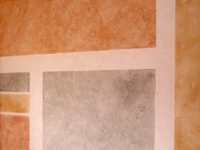
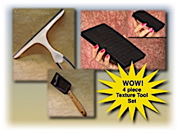
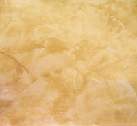
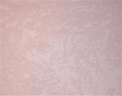
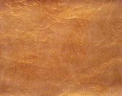
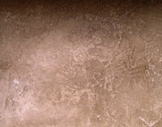

There are many alternatives to simply painting your walls these days.
Besides faux painting, adding texture to your walls first is gaining popularity. Before it was left to the dry wall experts but now many homeowners are finding that they can do it themselves. With a variety of different types of texture paint, it is easier than before. There are many ways to apply texture to your walls. Some methods require equipment like spray guns and compressors.
There are 3 main types of texture used for ceilings - orange peel, popcorn and knockdown. The most popular and recognized texture design used for walls is knockdown. A lot of new homes have this texture on the walls. It adds interest and value to the home. One of the good reasons that builders opt to add texture to the walls is that it is a great way to hide blemishes on the wall.

One of the oldest methods to apply a knockdown texture is to use a Hopper which is a portable texture spray gun. With the gun, you spray globs of the texture mixture on the wall and then once it is starting to set up, you knockdown the globs with a flat edged trowel. This method, though, can be quite messy and you must cover all the furniture with plastic as well as any area you don't want texture on. The reason is due to a lot of overspray. In addition, you usually have to mix your own texture paint. This method does save time, but there are usually no more than 2 persons who can work together. Therefore, there are other methods that we consider more feasible, especially if you want less mess and would like to use more workers.

Plaster can be used for creating beautiful faux italian walls. The most popular being Venetian Plaster. There are many websites and videos that show you how to apply the plasters. One thing you need to know about the different types of italian plasters is that the material can be very expensive. The process usually takes 3 days. You want to keep in mind that if you ever want to change the look of your walls after applying any plaster, you have to remove it which can be quite an ordeal. We are in the process of developing a way to achieve a faux venetian plaster, using just a glaze and the tools of the Triple S Faux System.
The picture on the left is an example of what your wall can look like with just paint and glaze, without the expensive plaster texture. You will be amazed at how quickly it is acheived with the Multi Color Faux Palette and a foam pad.
Bookmark this page and visit often so you can be one of the first to buy our new Texture Faux Painting DVD when it is available.
We are currently working on a new DVD which will enable you to achieve beautiful texture faux finishes. Watch the video at the top of the page to see just one of the techniques you will learn.
Here are some samples of the different texture faux finishes you will be able to achieve with the Triple S Faux System.



One of the frequently asked questions we receive is whether you can faux paint over textured walls. Yes, you definitely can. You are limited as to the faux finish because certain tools will not work on the texture. Therefore, we recommend applying a Color Wash over any textured paint you use. Usually you have to prime the walls first and paint them with a satin basecoat. However, there are some texture paints that you don't have to do so. Valspar (found at most Lowes) makes a great product called Textured Stone that eliminates the need for priming. You can actually faux paint right over it. To give yourself the open time you need, add one part glycerine to your glaze mixture. Click below to link to one of our pages to view a video that shows one way how to add color washing to knockdown textured walls.
Faux Painting on Knockdown Texture

(This kit includes Basic, Faux Marble, Faux Wood Kit and tools for texturing)
*FREE Priority Shipping and Color Idea E-book